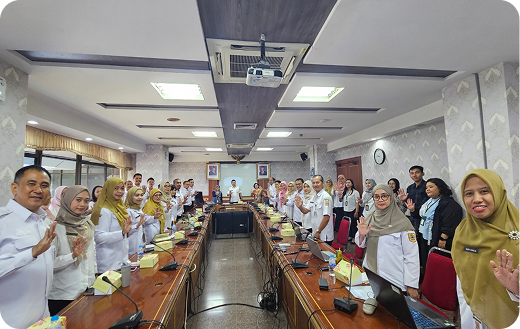
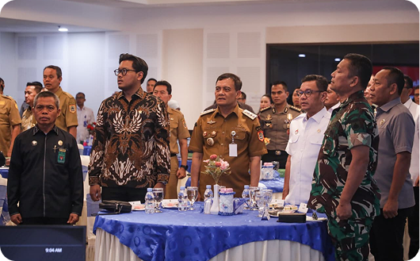
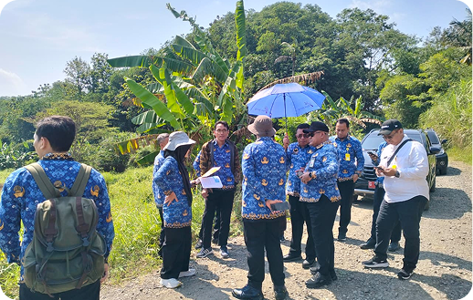

KerjasamaPEMERINTAH PROVINSI JAWA TENGAH GELAR MONITORING BERSAMA PROGRAM YKKS
Semarang – Yayasan Kesejahteraan dan Keselamatan Sosial (YKKS) dan ChildFund International di Indonesia menyelenggarakan Pertemuan Koordinasi dan Monitoring Bersama program kemitraan dengan Pemerintah Provinsi Jawa Tengah bersama Pemerintah Kota Semarang.

Otonomi DaerahPemerintah Provinsi Jawa Tengah menerima Delegasi Studi Strategis Dalam Negeri (SSDN) Pendidikan Penyiapan dan Pemantapan Pimpinan Nasional
Semarang, 8 September 2026 - Pemerintah Provinsi Jawa Tengah menerima Delegasi Studi Strategis Dalam Negeri (SSDN) Pendidikan Penyiapan dan Pemantapan Pimpinan Nasional (P4N) LXX Tahun Anggaran 2026 dari Lembaga Ketahanan Nasional Republik Indonesia (Lemhannas RI).
 Kerjasama
Kerjasama
Rapat kerja Forum Kerja Sama Daerah Mitra Praja Utama (FKD-MPU) yang digelar di Kota Semarang, Jawa Tengah
Rapat kerja Forum Kerja Sama Daerah Mitra Praja Utama (FKD-MPU) yang digelar di Kota Semarang, Jawa Tengah, menghasilkan tiga klaster kerja sama baru, yaitu ketahanan energi, giant sea wall di lima provinsi, dan pengelolaan sampah.
 Otonomi Daerah
Otonomi Daerah
Monitoring dan Evaluasi Terpadu Penerapan SPM Tahun 2026 di Kota Surakarta
SURAKARTA — Pemerintah Kota Surakarta bersama Pemerintah Provinsi Jawa Tengah menggelar kegiatan Monitoring dan Evaluasi (Monev) Terpadu Sekretariat Bersama (Sekber) Standar Pelayanan Minimal (SPM) serta Verifikasi dan Validasi (Verval) Pelaporan Penerapan SPM Tahun 2026.

PemerintahanRapat Koordinasi Koreksi dan Verifikasi Lapangan Batas Daerah Brebes-Tegal
Tegal - 17–18 Juni 2026 — Pemerintah Provinsi Jawa Tengah bersama Pemerintah Kabupaten Brebes dan Kabupaten Tegal melaksanakan Rapat Koordinasi Pembahasan Koreksi dan Verifikasi Lapangan Batas Daerah di wilayah perbatasan kedua kabupaten.
 Kerjasama
Kerjasama
Gubernur Jawa Tengah Tawarkan Peluang Investasi Baru kepada Pengusaha India
Semarang - Gubernur Jawa Tengah, Ahmad Luthfi, terus mendorong peningkatan kerja sama investasi dengan India sekaligus membuka berbagai peluang investasi baru bagi para pelaku usaha dari negara tersebut.